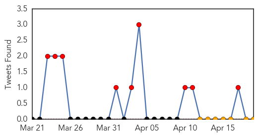

30 Day Trends
Web: 29 alerts, 0 warnings
Twitter: 9 alerts, 0 warnings
Top Articles:
- 1.000
- The Trinidad Guardian Newspaper
- 1.000
- Ebola virus circulating in Guinea is new strain
- 1.000
- Guinea says few new Ebola cases, outbreak nearly under control
- 1.000
- UPDATE 1-West African Ebola outbreak caused by new strain of disease - study
- 0.998
- Ebola Virus in Africa Outbreak is a New Strain
- 0.998
- UPDATE 1-West African Ebola outbreak caused by new strain of disease - study
- 0.997
- Kenya : Mob attacks Ebola treatment centre in Guinea, suspected cases reach Mali
- 0.959
- Ebola virus in Guinea is new strain
Top Tweets:
-
No tweets found for Apr 19, 2014
Web/News Articles

Tweets
Article Locations

Article Confidences